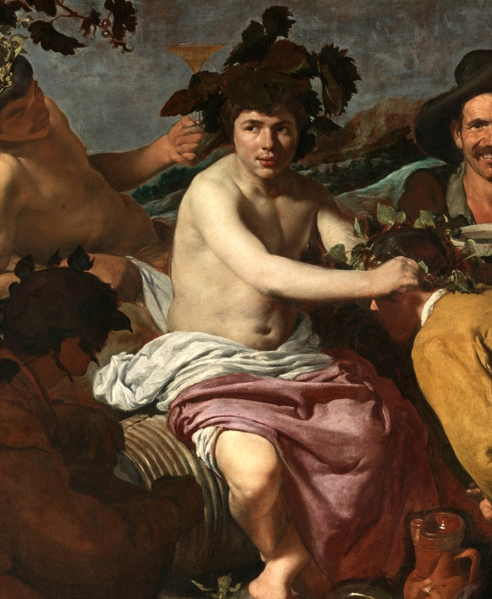
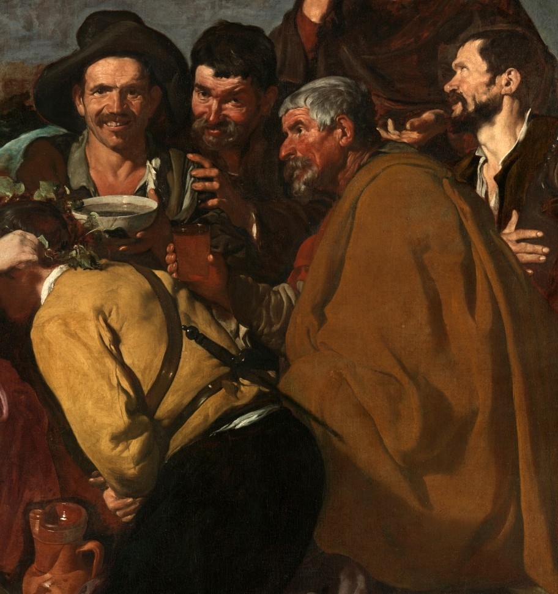
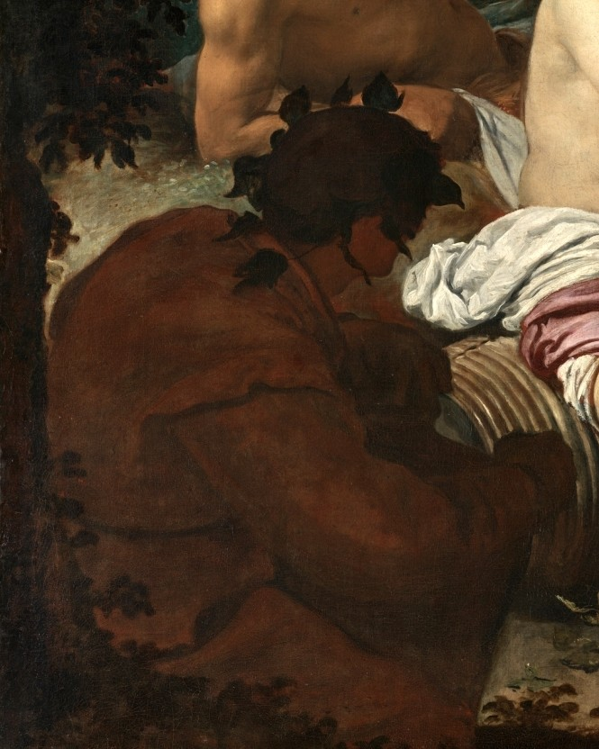
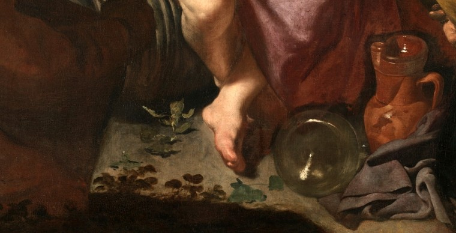

In classical tradition, when gods appeared among mortals, something terrible usually followed. Punishment, transformation, destruction. The divine was not to be trifled with.
Velázquez imagined something different.
In 1628, the young Sevillian painter — recently arrived at the Spanish court — delivered a scene that unsettled expectations. Bacchus, god of wine, sits among peasants. Not above them. Among them. His pale skin glows against their weathered faces, but he shares their space, their moment, their cup.
The god descends not to punish, but to pour.

the crowning

At the center, a man kneels before the god. Bacchus leans forward, placing a wreath upon his head — not of grape leaves, like his own, but of ivy. The distinction matters. Ivy was the crown of poets.
Spanish writers of Velázquez's time understood this gesture. Wine did more than intoxicate. It loosened something. Words that wouldn't come sober arrived freely after a cup or two. Truths that hid in daylight emerged in the warmth of drink.
The kneeling man receives not just wine, but the gift of speaking what he could not otherwise say.
the drunks

Look at them. Worn faces. Rough clothes. These are not courtiers or nobles. They are harvest workers, soldiers, men who labor. Their cheeks are flushed, their smiles loose. One raises a bowl in salute. Another laughs at something we cannot hear.
Velázquez brought the same unflinching eye he'd used in Seville — painting street vendors and kitchen scenes — to this mythological subject. The result was radical. Where Renaissance masters placed Bacchus in triumphant processions with leopards and dancing maenads, Velázquez sat him down among drunks.
The painting offers no judgment. Only observation. This is what wine does. It gathers. It levels. For a moment, the distance between god and peasant collapses.

the gaze

Two figures on the left look directly at us. Their eyes meet ours across four centuries. Art critic Mark Wallinger noted how this gaze "slices clean through 350 years in the most disconcerting way."
They seem to invite us. Or perhaps challenge us. Will you join? Will you drink? The boundary between the painted scene and the viewer dissolves — much as wine dissolves the boundaries between strangers.
Velázquez would return to this device decades later in Las Meninas, his masterpiece. But here, in an early work, the idea already stirs: painting as encounter, not just depiction.
the vessels

Near Bacchus's bare feet, a ceramic pitcher and a glass bottle catch the light. These are the vessels Velázquez knew from his Seville years — the same shapes that appeared in his bodegones, his kitchen scenes. Humble. Earthen. Real.
The god's luminous body provides contrast, making these ordinary objects glow with attention. A still life within a myth. The eternal and the everyday, sharing the same canvas.
why the spanish called it "los borrachos"
The painting's formal title is The Triumph of Bacchus. But the Spanish public gave it another name: Los Borrachos. The Drunks.
It's a telling choice. They saw not the god, but the men around him. Not the myth, but the reality. The painting belonged to the court of Philip IV, who paid Velázquez 100 ducats for it. Yet even in royal halls, viewers recognized something common in the scene. Something familiar.
Wine offers temporary reprieve from a world that offers little.
Some scholars read the painting as a parody of classical myth. Others see it as sympathy — peasants asking the god of wine for relief from their sorrows. Perhaps both are true. The genius of Velázquez is that he doesn't tell us what to feel. He only shows us what is.
wine as leveler
Every culture that has known wine has known this truth: the cup makes equals of us all. Kings and servants, gods and mortals, the celebrated and the forgotten — all arrive at the same place after enough wine.
Velázquez painted that place. Not as mockery. Not as warning. Simply as fact. The Triumph of Bacchus is not about the god's victory over mortals. It's about his willingness to sit among them.
Four centuries later, we still gather around tables, raise glasses, and for a moment forget the distances between us. The god may have faded from belief, but his gift remains. Fermented. Poured. Shared.
The triumph continues.